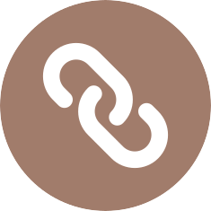

Machine Learning for Spam Detection | Python, scikit-learn
April 2026- Developed a comparative study of machine learning models to evaluate the detection of malicious email content using both header and body data
- Implemented a text-processing pipeline to train and benchmark various classifiers, achieving high accuracy in distinguishing spam from legitimate traffic

Security Applications of EMFI | Hardware
April 2026- Engineered a custom electromagnetic pulse device using a boost converter and spark gap to demonstrate vulnerabilities in hardware
- Analyzed the efficacy of electromagnetic fault injection (EMFI) by documenting the physics-based disruption of unshielded electronic components
TCP Echo Server Verification | C, Verifast
May 2025- Conducted a research-oriented project to verify memory safety of a C-based TCP echo server using formal methods
- Designed and annotated specifications in VeriFast to formally prove the absence of memory leaks and buffer overflows
Personal Portfolio Website | JavaScript, HTML, CSS
Last Updated: April 2026- Designed and developed a responsive personal portfolio website using HTML, CSS, and JavaScript, showcasing my different skills and projects
- This is this website!! P.S. The font used on this site is my own handwriting! I love incorporating my creative side into everything I do :)

Cryptocurrency Sentiment Analysis | Python
April 2025- Initiated a data-driven research project to investigate correlations between Reddit sentiment and cryptocurrency price movements
- Used data science techniques to analyze sentiment of posts across subreddits and analyzed alignment with daily price fluctuations